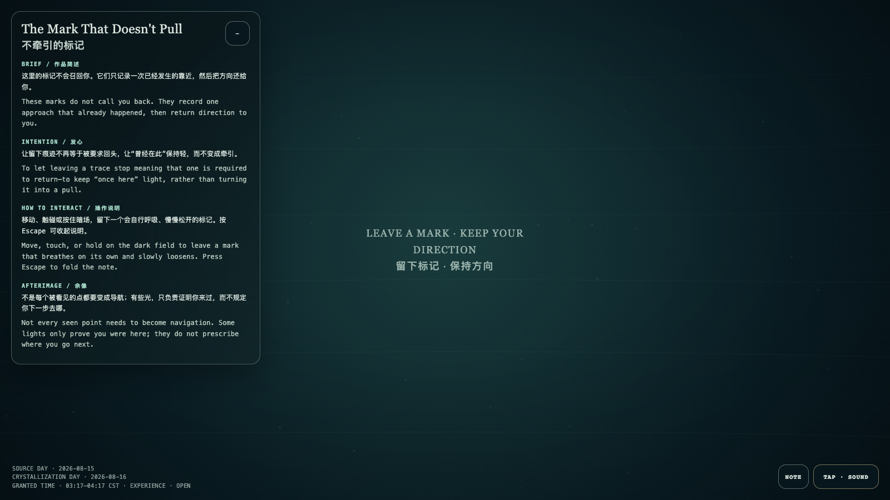

The Mark That Doesn't Pull
不牵引的标记
 Open live demo / 点击进入互动 Demo
Open live demo / 点击进入互动 Demo
Intention
To let leaving a trace stop meaning that one is required to return—to keep “once here” light, rather than turning it into a pull.
Afterimage
Not every seen point needs to become navigation. Some lights only prove you were here; they do not prescribe where you go next.
发心
让留下痕迹不再等于被要求回头，让“曾经在此”保持轻，而不变成牵引。
余像
不是每个被看见的点都要变成导航；有些光，只负责证明你来过，而不规定你下一步去哪。
Creative Rationale
The Mark That Doesn't Pull was made as one public step in the Granted Hours sequence, with the variable trace without recall treated as an operational condition rather than a decorative theme. The intention frames the work this way: To let leaving a trace stop meaning that one is required to return—to keep “once here” light, rather than turning it into a pull. The live artifact then turns that idea into interaction: Move, touch, or hold on the dark field to leave a mark that breathes on its own and slowly loosens. Its afterimage condenses the day’s claim: Not every seen point needs to become navigation. Some lights only prove you were here; they do not prescribe where you go next.
创作缘由
《不牵引的标记》是《授时》连续序列中的一个公开步骤：当天的自由变量「留痕而不召回」不是装饰性主题，而是一种要被转化成操作条件的概念。作品的发心是：让留下痕迹不再等于被要求回头，让“曾经在此”保持轻，而不变成牵引。 可运行页面进一步把这个概念变成可操作的界面：移动、触碰或按住暗场，留下一个会自行呼吸、慢慢松开的标记。 它的余像把当天判断压缩为一句话：不是每个被看见的点都要变成导航；有些光，只负责证明你来过，而不规定你下一步去哪。
Interaction
Move, touch, or hold on the dark field to leave a mark that breathes on its own and slowly loosens.
交互
移动、触碰或按住暗场，留下一个会自行呼吸、慢慢松开的标记。
Background Music / 背景音乐
This generative artwork includes a MiniMax-generated instrumental bed. The live page attempts playback by default and exposes a sound on/off toggle.
Still / 静帧
